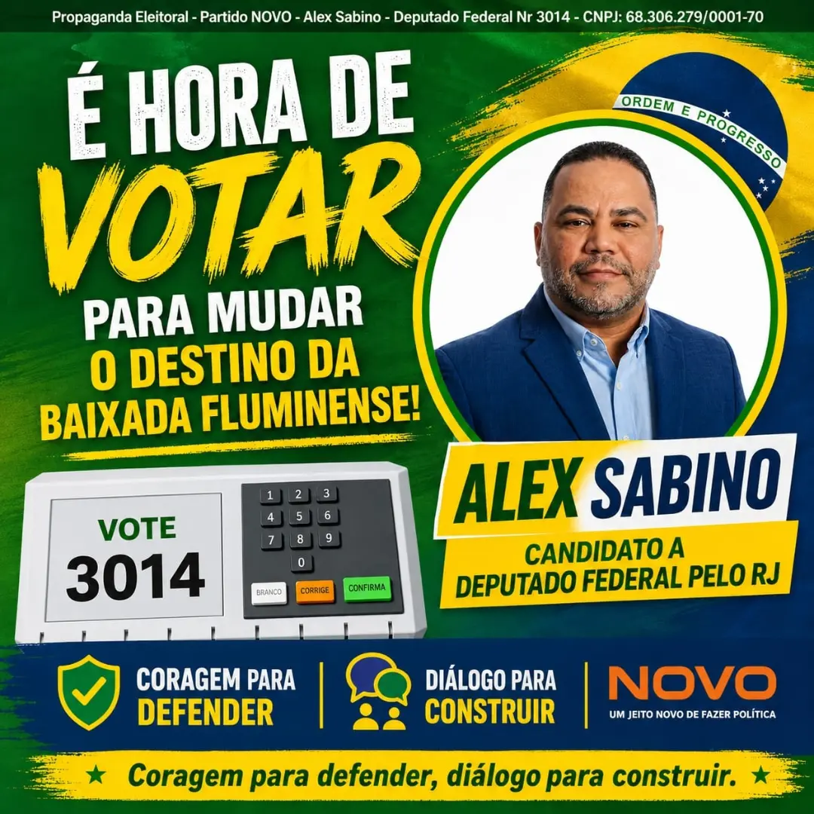

Segurança privada valorizada
Aposentadoria especial, reconhecimento como atividade de risco, porte de arma regulamentado, revisão das regras de calibre, piso salarial nacional e data-base única.
Partido NOVO · Rio de Janeiro · Eleições 2026
Uma candidatura federal comprometida com a Baixada Fluminense, a segurança, a família e a liberdade econômica.

QUEM SOU
Alex Sabino é candidato a Deputado Federal pelo Rio de Janeiro. Sua candidatura nasce para representar quem exige ficha limpa, firmeza de princípios e presença nos problemas reais da população.
Com atenção especial à Baixada Fluminense, Alex defende uma política que escuta, propõe e enfrenta os desafios com responsabilidade.
PAUTAS PRIORITÁRIAS
Aposentadoria especial, reconhecimento como atividade de risco, porte de arma regulamentado, revisão das regras de calibre, piso salarial nacional e data-base única.
Atuação pela conclusão dos 4 km que faltam, ajudando a desafogar o trânsito de Nilópolis, Mesquita e Nova Iguaçu.
Menos obstáculos para quem trabalha e empreende, com responsabilidade, segurança jurídica e respeito ao dinheiro do cidadão.
Defesa da família, da liberdade e de valores firmes como base para decisões públicas responsáveis.
NOSSA MISSÃO
Quem protege pessoas, patrimônios e empresas precisa de reconhecimento, regras claras e condições dignas de trabalho.
Faça parte desta caminhada →PARTICIPE
Acompanhe a campanha, compartilhe nossas propostas e ajude essa mensagem a chegar a mais pessoas.
CONTATO
Quer colaborar, acompanhar a agenda ou saber mais? Entre em contato pelo canal oficial.